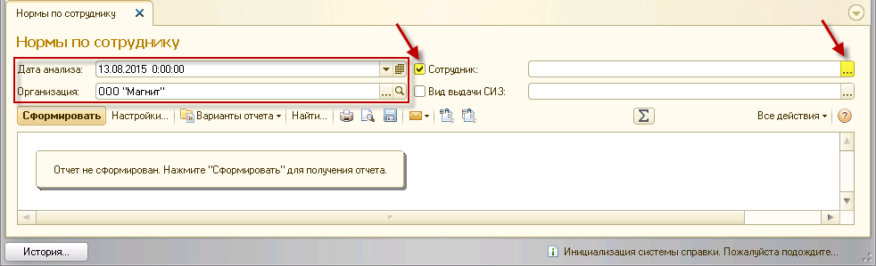
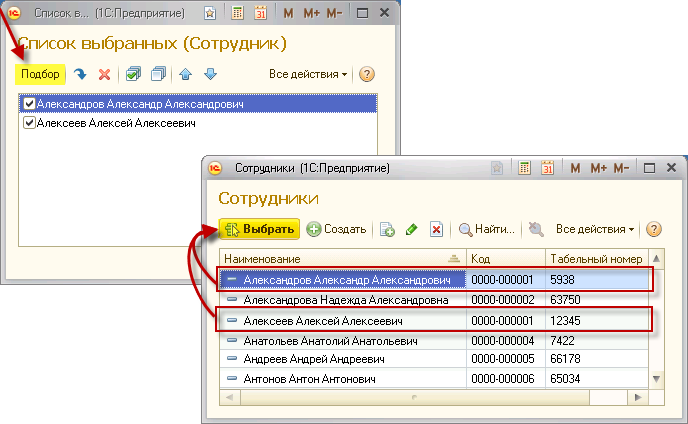
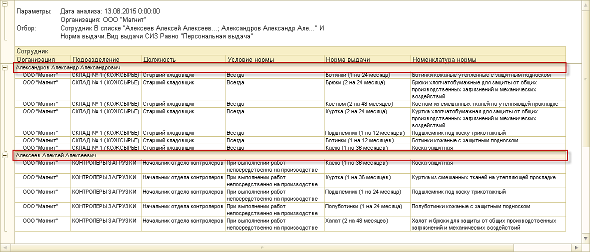

Укажите дату анализа и организацию. Проставьте флажок напротив параметра «Сотрудник» и нажмите на кнопку <...>

С помощью подбора определите список сотрудников для формирования отчета.

По указанным параметрам будет сформирован отчет.

Чтобы распечатать сформированный отчет, нажмите кнопку